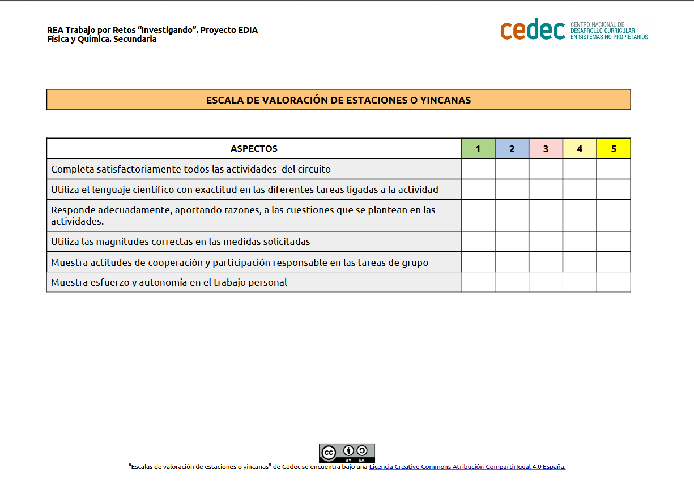

Los niveles del saber
- Duración:
- 1 sesión
- Agrupamiento:
- Pequeños grupos
En esta tarea, cada grupo deberá elaborar un Formulario de Google, con preguntas que deberán resolver el resto de grupos. Cada grupo debe elegir dos preguntas de cada nivel:
- El nivel de los conceptos
- El nivel de la pruebas numéricas
- El nivel digital (debéis incluir también el vídeo en el formulario)
¡Recuerda que puedes responder aquí a las preguntas para practicar y comprobar lo que has aprendido!
Si tienes dudas a la hora de hacer el formulario, puedes preguntar a tu profesor y consultar los siguientes vídeos:

El nivel de los conceptos
El nivel de las pruebas numéricas
El nivel digital
Evaluación y reflexión
Una vez que hemos finalizado la tarea, es un buen momento para reflexionar en nuestro diario de aprendizaje. Algunas sugerencias pueden ser:
- ¿Qué he aprendido?
- ¿Qué me ha sorprendido más de todo el proceso? ¿Por qué?
- ¿He cambiado alguna idea previa? ¿Cuál?
- ¿Qué me ha resultado más difícil? ¿Por qué?
Evaluación
Utilizamos La escala de valoración de yincanas (descargar en formato editable odt y pdf).
